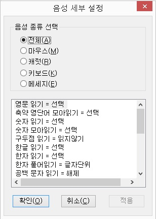

Ⅶ-2-1. 음성 출력
센스리더에서 기본적으로 지정된 음성의 속도, 높이, 크기 등이 사용자의 취향에 맞지 않는 경우 이를 변경합니다.
음성을 설정하기 위해서는, 우선 변경하고 싶은 음성 종류를 선택하고 속도, 높이, 크기를 차례대로 설정하면 됩니다. 만약, 음성 종류에 상관없이 설정을 변경하고 싶다면, 음성 종류를 고르는 라디오 버튼에서 '전체' 옵션을 선택합니다.
다음의 과정에 따라 음성출력을 설정합니다.
① 센스리더 창에서 [음성 설정] -> [음성출력] 메뉴를 선택합니다.

② 설정 대화상자가 출력되면 음성 종류를 선택하는 라디오버튼에서 사용자가 원하는 음성의 종류를 선택합니다.
③ <Tab> 키를 눌러 속도를 조절하는 슬라이드로 이동한 뒤, 방향키를 이용해 수치를 조절합니다. 슬라이드는 모두 10단계로 구성되어
있습니다.
④ 같은 방법으로 높이와 크기를 사용자가 원하는 수치로 조정합니다.
⑤ '확인' 버튼을 눌러 설정된 값을 적용합니다.
* 단축키를 이용하는 경우, 음성 종류는 <Insert-좌측 화살표> 키를 이용해 변경할 수 있고, 지정된 음성 종류의 수치 변경은 <Insert-위/아래 화살표>
키를 이용합니다.
Ⅶ-2-2. 반복 문자 읽기
반복 문자란 하나의 문자가 연속으로 출력되는 경우를 의미합니다. 예를들면, '-----'는 반복 문자에 속하며, '-=-=-=-=-='는 반복문자에 해당되지 않습니다.
대개의 경우 반복 문자는 화면에서 내용을 구분하기 위해 선을 긋는 용도로 사용되기 때문에 이를 모두 음성출력할 경우 오히려 사용자에게 불편함을
줄 수 있습니다.
반복문자 읽기 설정은 반복문자 처리 채크상자, 음성알림 채크상자, 반복수로 구성됩니다.
여기에서도 음성 출력 설정과 마찬가지로 전체, 키보드, 마우스, 캐럿, 메세지로 구분해서 설정할 수 있습니다.

1. 반복문자 처리
이 항목이 해제 되면 모든 반복 문자들에 대해서 반복 여부를 채크하지 않습니다.
예를들면, '-----' 라는 문자열이 있는 경우 "대시대시대시대시대시"과 같이 읽게 됩니다.
반대로, 이 항목을 선택하면 "대시대시대시 반복 5"처럼 문자가 반복된 횟수를 알려줍니다.
2. 음성 알림
이 항목이 해제되면 처리는 하지만 음성으로 출력되지는 않습니다.
예를 들면, '-----' 문자열은 ''로 처리되며, 마치 문자열이 없는 것처럼 음성을 출력하지 않습니다.
반대로, 이 항목이 선택되면 특정 문자가 몇 번 반복되는지 여부를 음성으로 출력합니다.
3. 반복 수
특정 문자가 몇 개 이상일 때 반복문자로 처리할 것인가를
설정합니다.
예를 들어, 반복수가 3이라면 '--'는 '대시대시'라고 읽지만 '----'는 '대시대시대시 반복 4'라고 읽게 됩니다.
Ⅶ-2-3. 음성 세부 설정
음성 출력의 나머지 항목을 설정하는 부분이며 전체, 마우스, 키보드, 캐럿, 메시지로 구성되어 있습니다. 각 항목의 설정값은 <Space>
키를 사용해 변경할 수 있습니다.

음성 세부설정의 항목은 다음과 같습니다.
1. 영문 읽기 선택/해제
영문 알파벳을 읽을 것인가 여부를 선택합니다.
2. 축약 영단어 모아 읽기 선택/해제
구두점 읽기와 상관없이 축약 영단어를 모아서 읽을 것인가 선택합니다.
3. 숫자 읽기 선택/해제
숫자를 읽을 것인지 아닌지 선택합니다.
4. 숫자 모아 읽기 선택/해제
구두점 읽기와 상관없이 숫자를 모아서 읽을 것인가 선택합니다.
5. 구두점 읽기 설정
구두점 읽기 목록에 등록된 읽기 방법 중 원하는 읽기 방법을 선택합니다.
6. 한글 읽기 선택/해제
한글을 읽을 것인가 여부를 선택합니다.
7. 한자 읽기 선택/해제
한자를 읽을 것인지를 선택합니다.
8. 한자 풀어 읽기 해제/글자단위/모두
한자를 읽을 때 음만 읽을 것인지 음과 훈을 풀어서 읽을 것인지 선택합니다. 글자단위 옵션을 선택한 경우 라인, 단어단위 이동시에는 음만 읽어주고, 글자단위 이동시 음과 훈을 읽어줍니다.
9. 공백문자 읽기 선택/해제
빈칸을 읽을 것인가 여부를 선택합니다.
10. 탭 문자 읽기 선택/해제
<Tab> 키를 눌렀을 때 '탭'이라고 말할 것인가 여부를 선택합니다.
11. 리턴 문자 읽기 선택/해제
Enter 키를 눌렀을 때 '리턴'이라고 말할 것인지 여부를 선택합니다 .
12. 이스케이프 문자 읽기 선택/해제
ESC키를 눌렀을 때 '이스케이프'라고 말할 것인가 여부를 선택합니다.
13. 백스페이스 문자 읽기 선택/해제
Backspace키를 눌렀을 때 '백스페이스'라고 말할 것인지 여부를 선택합니다.
14. 선문자 읽기 선택/해제
한자, 한글, 영문, 특수문자 등을 뺀 나머지 기호들을 ‘선’으로 읽을 것인지 여부를 선택합니다.
15. 사용자 단어 사전 사용 선택/해제
사용자가 별도로 정의한 '사용자 단어사전'을 사용해 텍스트를 읽을 것인가 여부를 선택합니다.
16. 문자 사전/이모티콘 사용 선택/해제
문자 사전과 이모티콘 기능을 사용할 것인지 선택합니다.
17. 특수 문자 읽기 선택/해제
특수문자로 지정된 문자를 읽을 것인가 여부를 선택해 줍니다.
18. 특수 문자 풀어 읽기 해제/글자단위/모두
특수문자를 풀어서 읽을 것인지 음만 읽을 것인지 선택합니다. 글자단위 옵션을 선택한 경우 라인, 단어 단위 이동시에는 내용에 입력된 값만 읽어주고, 글자단위 이동시 풀어읽기에 등록된 값을 읽어줍니다.
19. 대문자 구분 음높이/"CAP"
글자단위로 읽을 경우 대문자라는 정보를 표시하기 위해 음높이를 사용할 것인지 "CAP"을 붙일 것인지를 선택합니다.
20. 대문자 음 높이 변화 폭 = 3
글자단위로 읽을 경우 대문자와 소문자 구분을 위해 음 높이를 설정하며 1부터 5까지의 범위 내에서 선택이 가능 합니다.
21. 대문자 사운드 알림 = 해제
글자단위로 읽을 경우 대문자라는 정보를 표시하기 위해 별도의 비프음을 출력할지 여부를 선택합니다.
22. 대문자 단어 끊어 읽기 = 해제
띄어쓰기 없이 대문자와 소문자가 섞여 있을 때 대문자를 기준으로 단어를 구분하여 음성을 출력할지 선택이 가능합니다.
또한 모든 단어가 대문자인 경우 "전체 대문자 제외" 옵션을 선택할 수 있습니다.
23. 반복 문자 처리 선택/해제
반복문자를 처리할 것인지 선택합니다.
24. 반복 문자 음성 알림 선택/해제
반복문자처리를 선택했을 경우 반복문자 처리 결과를 음성 출력할지 여부를 선택합니다.
25. 억양 넣음 선택/해제
구두점에 따라 문장의 억양을 사용할지 여부를 선택합니다. (억양은 물음표의 경우 올려서 읽고, 마침표의 경우 내려서 읽는 것을 의미합니다.)
26. 단어 읽기시 모든 글자 읽기 선택/해제
Ctrl + 방향키를 이용하거나 리뷰, 객체탐색기능으로 단어 읽기시 구두점, 특수문자등의 설정값과 무관하게 모든 글자를 읽을지를 선택 합니다.